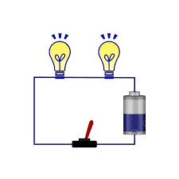
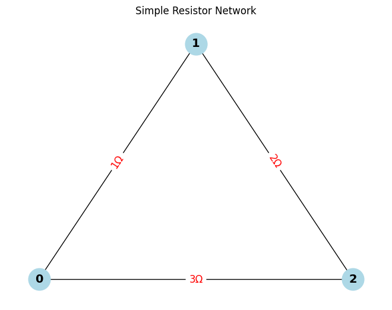

What is an Electric Circuit?
An electric circuit is a closed path that enables electric current to flow. It generally consists of:
- A power source (e.g., battery or generator)
- Conductive wires for carrying the current
- One or more electrical components (e.g., resistors, switches, bulbs)
✅ A circuit must be complete and unbroken to function — allowing charges to circulate continuously.

Calculating Equivalent Resistance Using Graph Theory
In graph theory, a resistor network can be represented as a graph where:
- Nodes (vertices) = circuit junctions
- Edges = resistors (edge weight = resistance)
Method Overview
- Model the circuit as an undirected weighted graph.
- Construct the conductance matrix (1/R for each resistor).
- Build the Laplacian matrix
L: L = D - AD: Degree matrix (sum of conductances at each node)A: Adjacency matrix (using conductance values)- Use the Moore-Penrose pseudoinverse of
L(denotedL⁺) to compute: ```math R_eq(a, b) = L⁺[a,a] + L⁺[b,b] - 2 * L⁺[a,b]

Function CalculateEquivalentResistance(graph, node_start, node_end): While number of edges > 1: For each node N in graph:
# --- Series Reduction ---
If N has exactly two neighbors (A and B) and N is not start or end:
R1 = resistance between N and A
R2 = resistance between N and B
Replace edges (A-N) and (N-B) with a single edge (A-B) of resistance R1 + R2
Remove node N
# --- Parallel Reduction ---
For each pair of nodes (U, V) with multiple edges:
Combine all resistors R1, R2, ..., Rn between U and V
R_parallel = 1 / (1/R1 + 1/R2 + ... + 1/Rn)
Replace multiple edges with a single edge (U-V) of resistance R_parallel
Return resistance between node_start and node_end
## Pseudocode Explanation: Series and Parallel Resistor Reduction
This pseudocode outlines an algorithm to compute the equivalent resistance between two nodes in a resistor network by identifying and reducing series and parallel connections.